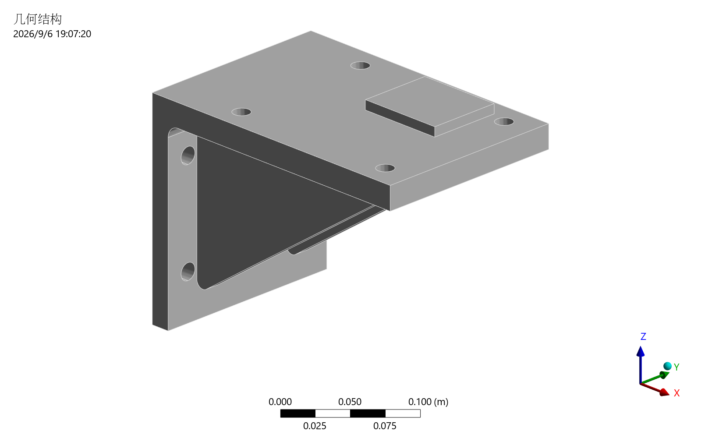
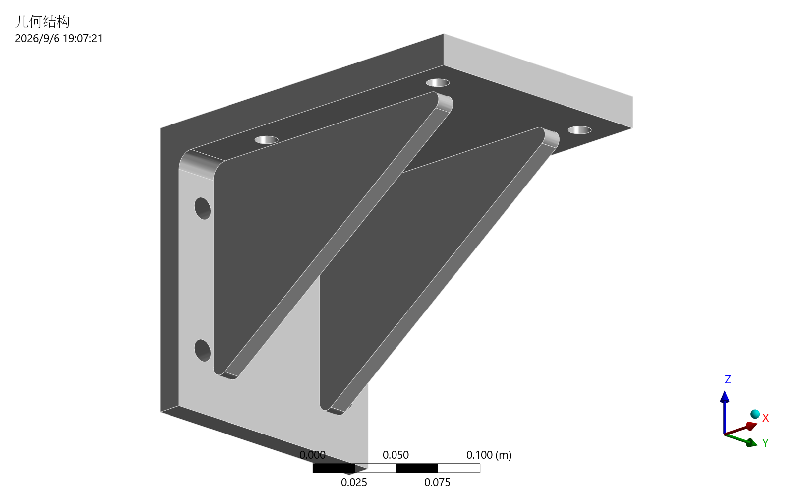

读取明确的规格
单一连续实体，背面全固定。螺栓预紧、接触、安装板柔度与焊缝细节未建模。
下载完整规格 ↓下载 STEP 模型 ↓建模假设与验收条件 →圆角加强肋、安装孔、偏心承载台。三向力、压力与自重共同作用，
通过三档网格和五次串行求解，核验平衡、网格变化与线性响应。

五个工况的独立力／力矩平衡、两次网格加密变化和全节点线性校核。
全局峰值未作为强度验收条件；安全系数与自动视觉审查为 NOT_RUN。
下表读取公开证据。上方图片始终属于标记的 5 mm 组合工况；没有为其他工况合成云图。
| 工况 | 网格 mm | 节点 | 单元 | 最大位移 mm | 最大等效应力 MPa | 力 / 力矩校核 |
|---|---|---|---|---|---|---|
| 正在读取已保存证据；精确结果也可在完整报告中查看。 | ||||||
全局应力峰值仅报告，不参与强度通过判定。全部 5 次运行的工程总状态保留 WARN。
变化率为 abs(fine − coarse) / abs(fine)。承载台节点等权统计，未作面积加权。
| 指标 | 12 mm | 8 mm | 5 mm | 12 → 8 | 8 → 5 | 容差 |
|---|---|---|---|---|---|---|
| 正在读取网格变化证据。 | ||||||
三个 5 mm 结果按节点 ID 与坐标对齐后逐节点比较。自重不倍增，包含自重的位移最大值也不直接作两倍比较。
逐节点容差：1e-12 m + 1e-6 × ||预测位移||。上述网格变化阈值不构成全场误差上界或固定边缘峰值的通用收敛保证。
CLI 的通用 reaction_balance 保持 NOT_RUN；测试的独立 force_balance、moment_balance 另行记录。人工图片查看独立于自动 visual_review。
同一已保存 5 mm 工程的补充导出，重开工程时未求解、未保存，工程文件前后 SHA256 相同。


页面展示已保存的真实结果，图片切换不运行求解器，也不生成新的仿真数值。
单一连续实体，背面全固定。螺栓预紧、接触、安装板柔度与焊缝细节未建模。
下载完整规格 ↓下载 STEP 模型 ↓建模假设与验收条件 →仓库规格采用 8 mm 名义网格。生成脚本与计划不需要 ANSYS。
ansys-sim run examples/gusseted-bracket/simulation.yaml --out build/bracket-demo-dry-run --json采用显式 mechanical_batch，真实集成入口为 test_engineering_bracket.py；需安装 Mechanical、许可证和 ANSYS_AVAILABLE=1。
Windows 复现指南 →工况与完整命令 →本实例使用 2026 年 9 月 6 日已完成的 5 次求解；208.16 秒为整组集成测试耗时。252 passed、20 skipped 是上一轮离线回归记录，不是本次展示替换后新执行的测试。其他 Mechanical 版本和远程执行尚未验证，早期本机 gRPC 握手失败未在该研究中重测。
查看证据来源与文件哈希 →Read the English test report ↗